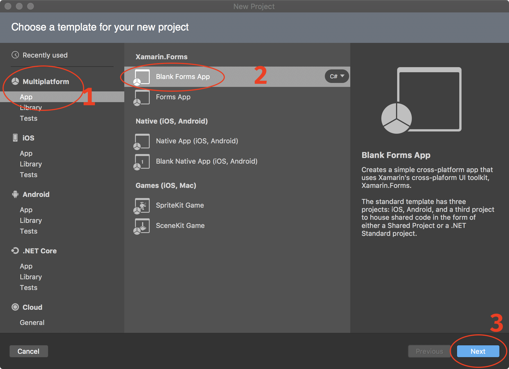
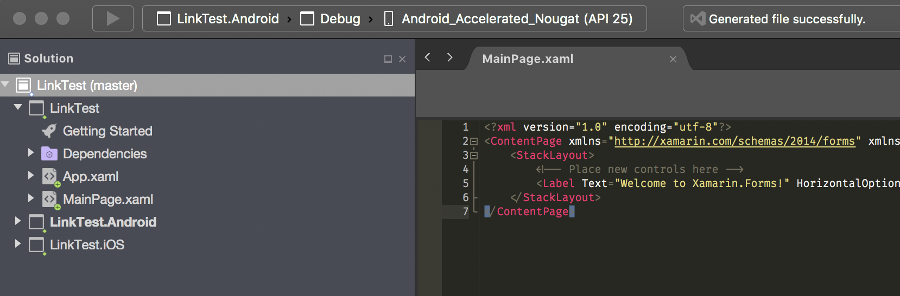
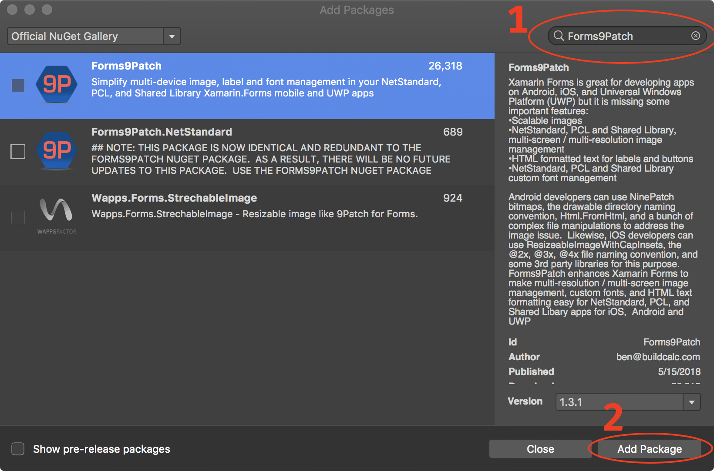
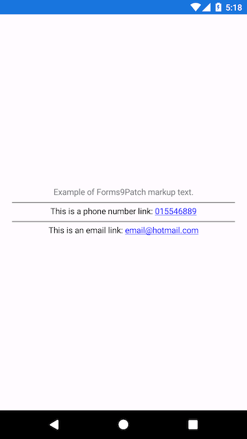
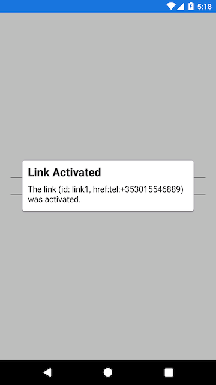

Getting Started: VisualStudio 2017 for Mac
Before you begin, check out the system requirements to be sure your application and development environment is ready.
This walk through demonstrates how to create an application that displays a label which is marked-up to show a phone number and email link. Tapping on those links will present a pop-up that asks permission to proceed with the phone call or email.
Create the LinkTest application as follows:
Launch VisualStudio.
Create a new Xamarin Forms project by clicking File | New Solution menu item. The New Project dialog will appear.

Select Multiplatform | App in the left navigation pad. Select Xamarin.Forms | Blank Forms App from the list of templates. Click [Next]. The second New Project dialog will appear.

Enter
LinkTestfor the App Name:, select Use .NET Standard for the Shared Code:, and click [Next]. The third New Project dialog will appear.
Your project settings should be as above. Click [Create] to start the project creation process. When complete, you will have a new project with the
MainPage.xamlfile open.
Add the Forms9Patch NuGet package to each of the solution's projects:
Shared Code Project
Expand the Dependencies folder in the LinkTest project.

Right click on the NuGet folder. The options pop-up menu will appear.

Select Add Packages.... The Add Packages dialog will appear.

Enter
Forms9Patchinto the search box (top right). When the Forms9Patch package appears, select it and then click [Add Package] to add it to the LinkTest project.
Android Platform Project
Expand the LinkTest.Droid project.

Double click on the Packages folder to open the Add Packages dialog.

If you just completed the Shared Code Project instructions, above, then Forms9Patch will be shown as the first package (as shown in the above image). Otherwise, enter
Forms9Patchinto the search box (top right). When the Forms9Patch package appears, select it and then click [Add Package] to add it to the LinkTest project.
iOS Platform Project
Expand the LinkTest.iOS project.

Double click on the Packages folder to open the Add Packages dialog.
If you just completed the Shared Code Project instructions, above, then Forms9Patch will be shown as the first package (as shown in the above image). Otherwise, enter
Forms9Patchinto the search box (top right). When the Forms9Patch package appears, select it and then click [Add Package] to add it to the LinkTest project.
Initialize Forms9Patch in each of your platform projects:
Android
Open MainActivity.cs in your solution's Android platform project.
Between
global::Xamarin.Forms.Forms.Init(this, bundle);andLoadApplication(new App());, add the Forms9Patch.Droid initialization call using the key for the LinkTest applications. The result should look like the following:global::Xamarin.Forms.Forms.Init(this, bundle); Forms9Patch.Droid.Settings.Initialize(this); LoadApplication(new App());
iOS
Open AppDelegate.cs in your solution's iOS platform project.
Between
global::Xamarin.Forms.Forms.Init();andLoadApplication(new App());, add the Forms9Patch.iOS initialization call using the key for the LinkTest applications. The result should look like the following:global::Xamarin.Forms.Forms.Init(); Forms9Patch.iOS.Settings.Initialize(this); LoadApplication(new App());
Update your application's MainPage content (MainPage.xaml) to use Forms9Patch elements:
In Solution Explorer, in the LinkTest project, double-click MainPage.xaml to open it.
Update MainPage.xaml with the following code. This code declaratively defines the user interface for the page.
<?xml version="1.0" encoding="utf-8" ?> <ContentPage xmlns="http://xamarin.com/schemas/2014/forms" xmlns:x="http://schemas.microsoft.com/winfx/2009/xaml" xmlns:Forms9Patch="clr-namespace:Forms9Patch;assembly=Forms9Patch" xmlns:local="clr-namespace:LinkTest" x:Class="LinkTest.MainPage"> <ContentPage.Padding> <OnPlatform x:TypeArguments="Thickness"> <On Platform="iOS" Value="20, 40, 20, 20" /> <On Platform="Android, WinPhone, Windows" Value="20" /> </OnPlatform> </ContentPage.Padding> <StackLayout VerticalOptions="Center"> <Forms9Patch:Label HorizontalTextAlignment="Center"> Example of Forms9Patch markup text. </Forms9Patch:Label> <BoxView HeightRequest="1" Color="Black"></BoxView> <Forms9Patch:Label x:Name="PhoneLabel" HorizontalTextAlignment="Center" TextColor="Black"> <![CDATA[This is a phone number link: <a id="link1" href="tel:+353015546889">015546889</a> ]]> </Forms9Patch:Label> <BoxView HeightRequest="1" Color="Black"></BoxView> <Forms9Patch:Label x:Name="EmailLabel" HorizontalTextAlignment="Center" TextColor="Black"> <![CDATA[This is an email link: <a id="link2" href="mailto:email@hotmail.com">email@hotmail.com</a> ]]> </Forms9Patch:Label> </StackLayout> </ContentPage>
Modify your share code's MainPage source code (
MainPage.xaml.cs) using the following code so it will respond to clicks / taps on theForms9Patch.Labelaction links.using System; using System.Collections.Generic; using System.Linq; using System.Text; using System.Threading.Tasks; using Xamarin.Forms; using Xamarin.Forms.Xaml; namespace LinkTest { public partial class MainPage : ContentPage { public MainPage() { InitializeComponent(); PhoneLabel.ActionTagTapped += ActionTagTapped; EmailLabel.ActionTagTapped += ActionTagTapped; } private void ActionTagTapped(object sender, Forms9Patch.ActionTagEventArgs e) { Forms9Patch.Toast.Create("Link Activated", "The link (id: " + e.Id + ", href:" + e.Href + ") was activated."); } } }Now, you're ready to build and run the LinkTest app on a platform. Since you're developing this app on a Mac, how about running LinkTest.iOS?
Go to the Startup Project Selection drop down and select the
LinkTest.iOSproject
Click the [▶] button to start the build-run process
After the build is complete, the iOS Simulator will start and VisualStudio will deploy the app's package.
Click on any of the links and you should see something like the following:


Try changing the Startup Project to
TestLink.Androidand run it on an x86 based Android emulator.As mentioned earlier: because of Forms9Patch's more comprehensive
Forms9Patch.Clipboardfunctionality, you will have to add the following code to your Android project'sResources/Values/string.xmlfile,before you can build your Android project.<string>name="forms9patch_copy_paste_authority">your_Android_app_package_name_here.f9pcopypaste</string>I know - it's a pain. At some point of time, I'll have to see if I can use some of the trickery used by the Xamarin.Facebook Nuget Package to get rid of this requirement.
BE SURE YOU DON'T RUN IT ON AN ARM BASED EMULATOR.
 